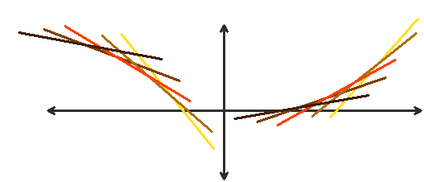

Derivata seconda, concavità e convessità
Abbiamo visto che il significato geometrico della derivata seconda è legato al concetto di curvatura della curva grafico della funzione. Vedremo ora come rendere più preciso, qualitativamente e quantitativamente, quest idea di curvatura del grafico attraverso il concetto di convessità. Si tratta di una nozione che in matematica ha una portata molto vasta, di cui qui potremo solo toccare i primi aspetti.
Convessità e corde
Cominciamo col ricordare che, in geometrica, si dice che una figura F (pensiamo ad es. a un sottoinsieme del piano) è convessa se, per ogni coppia di punti P1, P2 ∈ F avviene che il segmento che congiunge P1 a P2 è interamente contenuto in F:
Coerentemente a questa idea, diamo allora la seguente
Definizione 5.15.2 Consideriamo una funzione f: I ⟶ ℝ (dove I è un intervallo), Si chiama epigrafico (o soprafrafico) di f l'insieme
epi f = {(x,y) ∈ ℝ2 : x ∈ I e y ≥ f(x)}
Si dice allora che f è convessa in I se il suo epigrafico è un insieme convesso. Si dice che f è concava in I se −f è convessa in I. □
Segnaliamo subito che esiste una seconda terminologia, alternativa, che si usa talvolta per esprimere questi concetti: anziché f convessa in (a,b) si può dire f concava verso l'altro in (a,b), e invece di concava in (a,b) si può dire concava verso il basso in (a,b). Per non creare confusione, in questo paragrafo non useremo mai questa seconda terminologia.
Si dimostra facilmente che la definizione precedente è equivalente alla prossima, che fa riferimento al grafico anziché all'epigrafico della funzione:
Definizione 5.15.3 Sia f: I ⟶ ℝ (dove I è un intervallo), si dice che f è convessa (concava) in I se per ogni coppia di punti x1,x2 ∈ I si ha che il segmento ("corda") di estremi ((x1, f(x1), (x2, f(x2)) non ha punti sotto (sopra) il grafico di f. □
Questa definizione può essere riformulata anche mediante una disuguaglianza analitica. Con riferimento alla figura 2, esprimiamo iil generico punti (zt, ft) del segmento congiungente i punti ((x1, f(x1), (x2, f(x2)) come combinazione lineare convessa dei suoi estremi:
z = (1 − t)x1 + tx2; ft = (1 − t) f(x1) + tf(x2), t ∈ [0,1]
Si osservi che al variare di t ∈ [0,1] il punto z1 percorre il segmento [x1,x2] sull'asse x, e il punto del piano (zt, ft) percorre il segmento di estremi ((x1, f(x1), (x2, f(x2)).
La seconda definizione di convessità che abbiamo dato si esprime dunque così:
f(zt) ≤ ft ∀x1,x2 ∈ I, ∀t ∈ [0,1]
o, più esplicitamente
f((1 − t) x1 + tx2) ≤ (1 − t) f(x1) + tf(x2) ∀x1,x2 ∈ I, ∀t ∈ [0,1]
Questa disuguaglianza esprime il modo in cui viene spesso sfruttata l'informazione che una funzione è convessa. Se nella precedente disuguaglianza vale sempre il < la fuznione si dice strettamente convessa. Per le funzioni concave (o strettamente concave) varrà un'analoga disuguaglianza col segno ≥ (o >).
Si notiche che la definizione di funzione convessa non richiede a priori che f sia una funzione continua o derivabile, quindi è molto generale:
Si può dimostrare che le situazioni esemplificate dalla figura precedente sono effettivamente "le peggiori possibili", nel senso che:
Definizione 5.15.4 Una funzione convessa (o concava) su un intervallo I è continua in I, salvo al più negli estremi dell'intervallo. Inoltre possiede derivata destra e sinistra in ogni punto interno dell'intervallo. □
Dunque, punti angoloso all'interno e punti di discontinuità agli estremi sono i soli comportamenti irregolari permessi ad una funzione convessa o concava.
Convessità e monotonia della derivata prima
Il test di monotonia, come abbiamo visto, permette di determinare le zone in ui f cresce o decresce mediante il segno della derivata prima. Se applichiamo il test alla funzione f'(x), potremo studiare la monotonia di f'(x) mediante il segno della derivata seconda. Se dunque f è una funzione derivabile due volte in (a,b), avremo:
f'' ≥ (a,b) ⇔ f' crescente in (a,b);
f'' ≤ (a,b) ⇔ f' decrescente in (a,b);
Si dice che f è convessa in (a,b) se soddisfa la a);Si dice che f è concava in (a,b) se soddisfa la b).
Il significato geometrico della convessità o concavità di una funzione può essere illustrato in diversi modi. Cominciamo ad osservare che se f è convessa, ossia f' è crescente, al cresce di x il coefficien angolare m della retta tangente al grafico di f cresce: se m è positivo, ciò significa che la tangente diventa sempre più ripida, come nella fig. 5.
Analogamente per la concavità.
Esempio 5.15.5 Le funzioni esponenzili f(x) = ax sono convesse in ℝ, per qualunqu base a ≷ 1. Infatti
f'(x) = ax log a; f''(x) = ax (log a)2 > 0 ∀x ∈ ℝ, ∀ a > 0, a ≠ 1. ■
Esempio 5.15.5 Le funzioni logaritmiche f(x) = logax sono concave in (0,∞),se a > 1, convesse in (0,∞) se 0 < a < 1. Infatti:
Esempio 5.15.6 Le funzioni potenza a esponente reale α, f(x) = xα sono convesse in (0.,∞) se α > 1 oppure α < 0, sono concave in (0,∞) se 0 < α < 1. Infatti:
f'(x) = αxα − 1; f''(x) = α(&lpha; − 1)xα − 2
che ha, per ogni x > 0, il segno di α(&lpha; − 1). ■
Ci si renda conto del significato geometrico di queste affermazioni osservando i grafici delle funzioni ora citate.
Convessità e rette tangenti
Un'utile caratterizzazione geometrica della convessità, su cui ritornernemo in seguito, coinvolge le retta tangenti al grafico della funzione.
Teorema 5.15.7 Una funzione f: (a,b) ⟶ ℝ, derivabile in (a,b), è convessa (concava) in (a,b) se e solo se comunque si scelga un punto x0 ∈ (a,b) si ha che il grafico di f si mantiene in tutto (a,b) sopra (sotto) il grafico della sua retta tangente in (x0,f(x0).
Esempio 5.15.8 Sappiamo che f(x) = ex è convessa in tutto ℝ. Ne segue che se, ad es., costruiamo la retta tangente al grafico di f in x = 0, ossia y = x + 1, risulta ex ≥ 1 + x ∀x ∈ ℝ. La retta tangente al grafico di f in x = 1, invece è y = ex. Di conseguenza risulta anche ex ≥ ex ∀x ∈ ℝ, e così via. ■
È utile talvolta sapere che una funzione (derivabile) convessa sta sopra le proprie rette tangenti e contemporaneamente sta sotto le proprie corde (definizione di convessità). Questo permette di concludere che, presi due punti qualsiasi sul grafico di una funzione convessar, il grafico tra quei due punti cade tutto nel triangolo che ha per lati la corda che li unisce e le rette tangenti al grafico nei due punti.

Questa limitazione può essere utile, ad es., quando si cerca di localizzare l'intersezione tra due curve.
Punti di flesso
Ovviamente, il verso della concavità di una funzione (ossia il fatto che sia convessa o concava) può cambiare, nel suo insieme di definizione; questo ci conduce al concetto di punto di flesso.
Definizione 5.15.9 Sia f: (a,b) ⟶ ℝ una funzione e x0 ∈ (a,b) sia un punto di derivabilità per f, oppure sia f'(x0) = ±∞. Il punto x0 si dice di flesso per f se esiste un intorno destro (x0, x0 + h), h > 0, in cui f è convessa (concava), e un intorno sinistro (x0 − h, x0) in cui f è concava. □
Attraversando un punto di flesso, la derivata seconda di f (se esiste) cambia segno. Ci aspettiamo allora che in questo punto f'' si annulli. Si può infatti dimostrare che:
Teorema 5.15.10 Sia x0 un punto di flesso per f; se esiste f''(x0), allora f''(x0) = 0.
Notiamo che, se sapessimo che f'' esiste in un intorno di x0 ed è continua in x0, allora la tesi del teorema seguirebbe dal T. dei valori intermedi per le funzioni continue (applicato ad f''). Ad ogni mnodo, si può dimostrare il teorema appena enunciato anche senza queste ipotesi ulteriori.
L'iplicazione opposta a quella enunciata dal teorema non è vera, come mostra l'esempio xx: un punto in cui la derivata seconda si annulla può non essere di flesso.
Il significato geometrico dei punti di flesso è ulteriormente chiarito dal prossimo:
Teorema 5.15.11 Se f: (a,b) ⟶ ℝ è derivabile in (a,b) e x0 ∈ (a,b) è un puntp di flesso, allora il grafico di f(x) attraversa la propria retta tangente in (x0, f(x0)) (v. figura 7).
Dim. Tracciamo la retta tangente al grafico di f(x) nel punto di ascissa x0. Se f è (ad es.) concava in (a,x0), poiché f è derivabile, il grafico di f sta sotto la retta in (a,x0) (v. T. su convessità e rette tangenti); d'altra parte f è convessa in (x0, b), perciò il suo grafico sta sopra la retta in (x0, b). Di conseguenza in x0 il grafico attraversa la retta tangente. □
Esempio 5.15.12. Sia f(x) = x3. Poichè f'(x) = 3x2 ≥ 0, la funzione è crescente su tutto ℝ. Ha un punto stazionario per x = 0, che non sarà però punto di massimo o minimo, perché la funzione è crescente. f''(x) = 6x ≥ 0 per x ≥ 0. Dunque la funzione è convessa per x > 0, concava per x < 0 e ha un punto di flesso in x = 0, a tangente orrizzontale. ■

Esempio 5.15.13. Sia f(x) = e−x2. Poiché f(x) = −2xe−xx2 ≥ 0 per x ≤ 0, la funzione crece per x < 0, decresce per x > 0 perciò ha un punto di massimo relativo in x = 0.
f''(x) = e−xx2(4x2 −2) ≥ 0 per x2 ≥ 1/2; x ≥ 1/√2; x ≤ −1/√2. La funzione è convessa per questi valori, concava per −1/√2 ≤ x ≤ 1/√2, ha punti di flesso in x = ±1/√2, con retta tangente di pendenza f'(x) (±1/√2) = ∓ √(2/e).
Esempio 5.15.13. Sia f(x) = x4. Poiché f'(x) = 4x3 ≥ 0 per x > 0, la funzione è crescente per x > 0, decrescente per x < 0 e ha un punto di minimo in x = 0. f''(x) = 12x2 ≥ 0 per ogni x, quindi la funzione è convessa in tutto ℝ. Perciò il punto x = 0, in cui f'' si annulla, non è un punto di flesso. ■
Esempio 5.15.14. Sia f(x) = ∛x. Per x > 0 la funzione è concava, per x < 0 è convessa (come si duduce dal segno di f''); in x = 0 è f'(0) = +∞. In base alla nostra definizione, x − 0 è un punto di flesso (a tangente verticale). Questo è anche coerente alla terminologia che abbiamo introdotto discutendo i punti di non deribabilità. Si vede che anche in questo caso il grafico attraversa la tangente nel punto di flesso; si noti che f''(0) non esiste.
Esempio 5.15.15. Sia f(x) = x |x. Per x > 0 è f(x) = x2, convessa; per x < 0 è f(x) = −x2, concava; si noti che esiste f'(0) = 0; dunque x = 0 è un punto di flesso. Tuttavia, f''(0) non esiste. ■